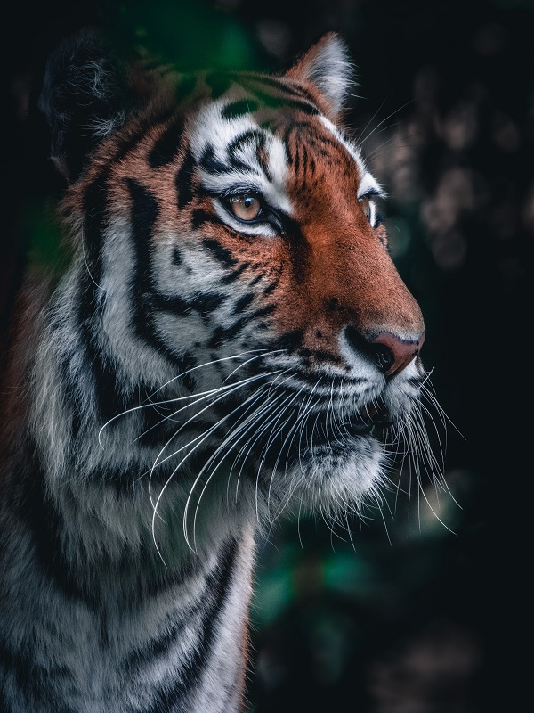

Animais Fantástico
-

-

-

-

-

-

- 
Raposa
Raposas são mamíferos da família Canidae, assim como lobos e cachorros. São animais onívoros que se alimentam, por exemplo, de roedores, lebres, frutos e sementes.
São consideradas raposas verdadeiras as espécies que pertencem ao gênero Vulpes, tais como a raposa-vermelha (Vulpes vulpes) e da raposa-do-ártico (Vulpes lagopus).
Raposas têm uma aparência que lembra a de um cachorro, destacando-se pelo seu focinho pontiagudo, orelhas eretas e pontudas e uma cauda espessa, a qual se relaciona com equilíbrio e também com o aquecimento do animal. Ratos, lebres, peixes, carniças e frutos são alguns produtos que podem fazer parte da dieta desses animais.
Esquilo
O esquilo (Sciurus vulgaris) é um mamífero pertencente à família Sciudidae e à ordem rodentia. Sua família comprende os esquilos arborícolas, terrestres, voadores e as marmotas, entre outros.
Dentre os esquilos arborícolas e terrestres há mais de 230 espécies e no grupo dos esquilos voadores estão incluídas 43 espécies conhecidas.O esquilo mais comum, o europeu, possui pelagem avermelhada, cauda longa e tem pelos compridos nas orelhas.
Este animal pode ser encontrado no mundo todo, menos na Austrália. Normalmente vivem em bosques de coníferas e caducifólias (plantas que em determinada época do ano perdem suas folhas). Embora existam espécies que podem ser encontradas no deserto ou na taiga. Para viver nestes lugares, os esquilos passaram por adaptações e desenvolveram estratégias que lhes permitem suportar as temperaturas extremas que caracterizam estas regiões.
Urso
Os ursos são mamíferos membros da família ursidae, junto com os pandas. Com oito espécies em cinco gêneros (Ursus, Tremarctos, Melursus, Helarctus e Ailuropoda) é uma família pouco diversa
São eles: Urso de Óculos, Urso Beiçudo, Urso-do-Sol, Urso Negro-Asiático, Urso Negro-Americano, Urso Polar, Urso Pardo e Urso Panda. São animais sempre grandes e geralmente onívoros, existem em todos os continentes, exceto na Austrália e Antártida.
Todas as espécies possuem garras não retráteis que usam para cavarem e para se alimentarem (caça). São plantígrados e podem correr com os dois pés. Alguns são escaladores, como o urso-de-óculos e o urso-do-Sol. O urso-polar é um exímio nadador. São animais crepusculares e noturnos, com algumas espécies com atividades diurnas, como o urso-polar.
Lobo
Os lobos são mamíferos carnívoros, pertencentes à família canidae, a mesma de cães, raposas, etc. É parente bem próximo do cão doméstico (Canis lupus familiaris) e acredita-se que este tenha se originado através da domesticação de lobos cinzentos
Pertencentes ao gênero Canis, há três espécies vivas: Lobo cinzento (Canis lupus) , Lobo vermelho (Canis rufus) e lobo etíope (Canis simensis), as outras são classificadas como subespécies. É um originário da Era do Gelo, mas atualmente, devido à pressão de caça, fragmentação de habitat e mudanças ambientais, encontra-se em poucas áreas do EUA, Canadá, Alasca, Europa e Ásia.
Machos pesam em média 50 kg e fêmeas 45 kg, apesar de haver registros de um lobo com mais de 70 kg na América do Norte. Um lobo-cinzento mede de 1,3 a 2,0 metros. As garras estão sempre expostas, diferente dos felinos, e podem alcançar 70 km/h quando caçam. Possuem glândulas odoríferas entre seus dedos, deixando sua marca para outros lobos, por onde passam.
Macaco
Macacos são animais mamíferos que fazem parte do grupo dos primatas. É muito comum ouvirmos a utilização do termo para referir-se a todo e qualquer primata, entretanto, nem todos os primatas são macacos.
Os macacos apresentam papel importante no meio ambiente, sendo muitas espécies dispersoras de sementes, garantindo, desse modo, a manutenção da biodiversidade das florestas.
Os macacos pertencem à classe Mammalia, e, como todo mamífero, apresentam o corpo recoberto por pelos e possuem glândulas mamárias. Os pelos desses animais variam de coloração a depender da espécie estudada. O mico-leão-dourado, por exemplo, apresenta-os com coloração que varia do dourado ao vermelho-dourado, enquanto o macaco-aranha-de-cara-preta apresenta pelos completamente negros.
Leão
O leão (Panthera leo) é um mamífero da ordem dos carnívoros e da família Felidae, sendo o segundo maior felino (o tigre é o primeiro) do mundo.
Um macho pesa em torno de 180 Kg, mas há registros de animal com 270 Kg e medem por volta de 1,2 metros. As fêmeas em média pesam 120 Kg (podem alcançar 180 Kg) e medem 1,1 metros. O comprimento de um leão pode atingir 3,3 metros.
Vivem em grupos de até 40 indivíduos, no qual os machos cuidam da proteção e as fêmeas da caça e do cuidado com os filhotes. Alimentam-se de vários animais, como as zebras e os gnus. Caçam em grupo, formando emboscadas e apesar desta tática gerar maior sucesso na caça (30% das investidas), acaba que cada indivíduo se alimenta menos. Um leão precisa comer no mínimo 5 kg de carne diariamente, como nem sempre se alimentam, chegam a comer 30 kg de uma vez só, por garantia.
Tigre
Os "tigres são animais pertencentes à família dos felídeos e gênero Panthera. É o maior felino do mundo e apresenta pescoço curto e grosso, ombros largos, grandes membros e longas garras. Esse animal possui caninos compridos, sendo o tigre-de-bengala portador dos maiores caninos de felinos do planeta"
O tamanho dos tigres varia muito de uma subespécie para outra. Os tigres-siberianos se distinguem como os maiores, com os machos podendo pesar cerca de 423 kg e atingir cerca de 3,7 m de comprimento. As fêmeas dos tigres-siberianos apresentam aproximadamente 2,4 m e 168 kg. Dentre as subespécies viventes, os tigres-de-sumatra são os menores. Enquanto os machos medem cerca de 2,34 m e pesam aproximadamente 136 kg, as fêmeas atingem 1,98 m e 91 kg.
Tigres, geralmente, são animais solitários. As fêmeas mantêm territórios ou áreas de vida que geralmente não se sobrepõem entre si. As áreas de vida de machos, normalmente, se sobrepõem ao território de uma a três fêmeas.